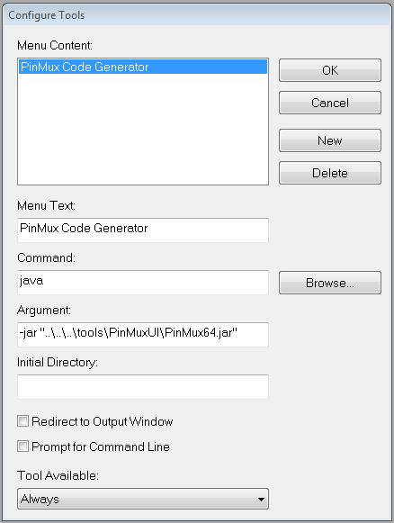

The ADUCM350 processor is rich in peripherals. Most pins are shared by multiple signals, and ports function as multiplexer controls. The Pin Multiplexing tool automates conflict detection and code generation for programming the port control registers. Pin multiplexing code generation directly sets the port control registers of a processor. The tool uses the hardware-specific mapping between the on-board peripherals of a processor and its port pins.
The PinMux tool requires the Java 64-bit run-time software. The Java software can be downloaded from java.com
The PinMux tool is run from the command line. Open a command prompt window in the tool/PinMuxUI folder. Execute the command:
java -jar PinMux64.jar
After making the signal selection in the PinMux tool press the Generate Code button and save the .c file. Include this generated file in your project and call the adi_initpinmux() function.
A tool link can be created within the IAR Embedded Workbench to run the PinMux tool. In IAR EW, open the Tools→Configure Tools menu. Create a new tool with these settings:
